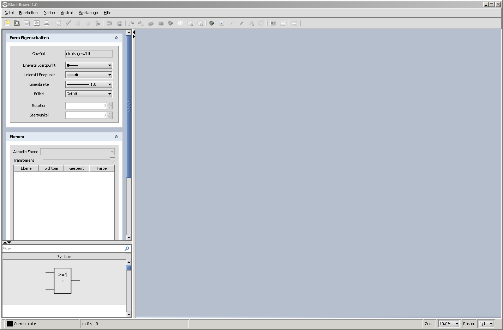

BlackBoard dient dazu, Schaltungslayouts für Lochrasterplatinen, im Englischen auch als Stripboard, Perfboard oder Breadboard bezeichnet, zu entwerfen. Dieses Dokument beschreibt die Bedienung von Blackboard und soll ein Leitfaden vom Einstieg bis zur fertigen Platine sein.
Nach dem Start präsentiert sich BlackBoard wie in der folgenden Grafik:
